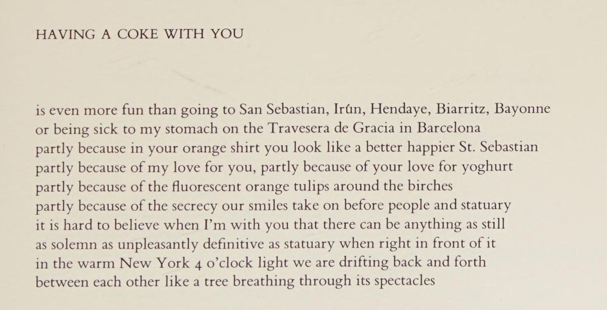
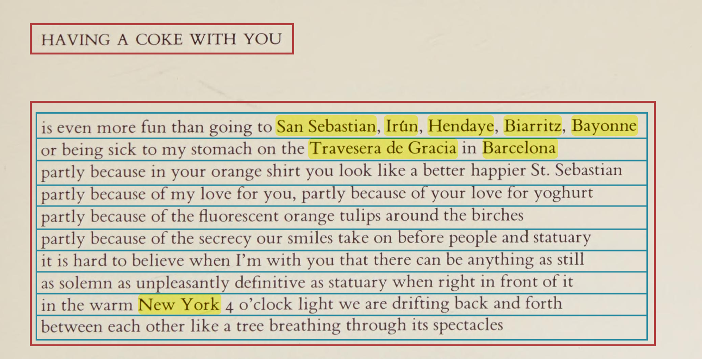
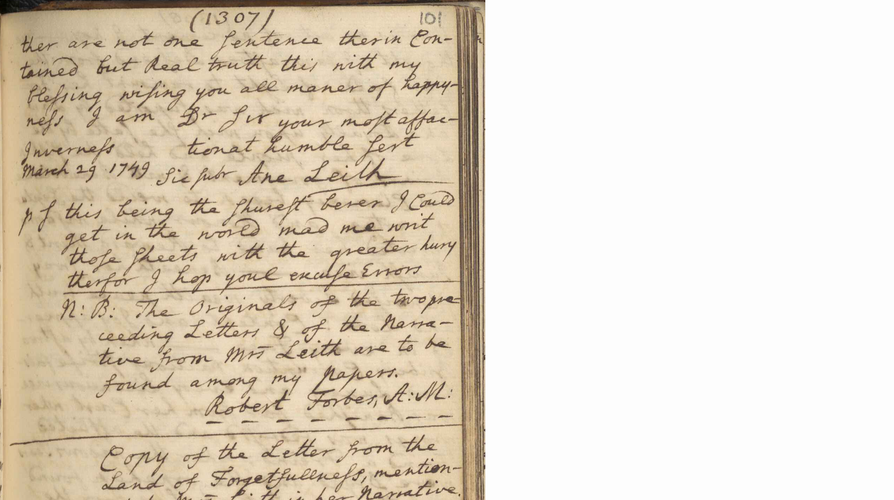
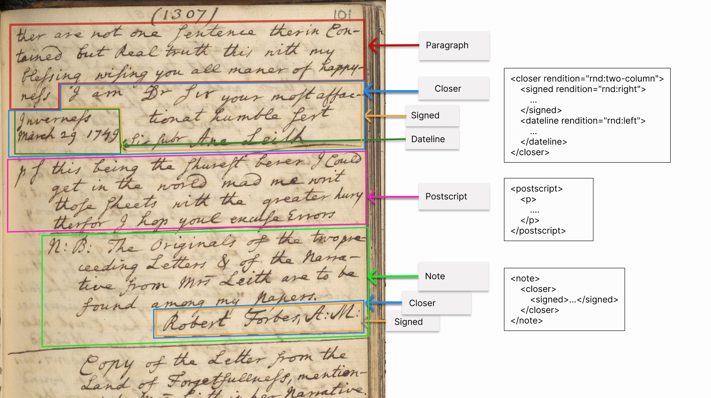

Unceded territory of the səl̓ilw̓ətaʔɬ (Tsleil-Waututh), kʷikʷəƛ̓əm (Kwikwetlem), Sḵwx̱wú7mesh Úxwumixw (Squamish), and xʷməθkʷəy̓əm (Musqueam) Nations
Today
- Introductions
- Introduction to Markup
- Introduction to TEI and XML
- Encoding Practice
About Me
- BA in English from UVic; MA in English from UBC
- Developer at the Digital Humanities Innovation Lab, SFU Library
What is markup?
Markup refers to a structured way to identify and separate textual information
The most common form of markup is a structure called XML (aka "pointy brackets")
Encoding, markup, et cetera...
At its core, marking up text is a way of identifying and differentiating bits of text from other bits of texts.




We do this all the time!
Italics for emphasis
Underlining for titles
Bold for extra-emphasis
Quotation marks for outside attribution
or skepticism
All capitals to YELL
+++
The Process of Marking Up Texts
The process is analytical, strategic, and interpretive.
It is analytical, in identifying a set of components into which the text can meaningfully be broken and whose relationship can be represented
Markup is strategic, in that text encoding is always aimed (deliberately or by default) at some intellectual or practical goal
And markup is interpretive, in that the act of encoding will always take place through a connection between an observing individual and a source object.
The TEI
The TEI
A set of guidelines for encoding text
A non-profit organization
A community or consortium of users
Website: https://tei-c.org/
The TEI
Used primarily for representing texts and creating scholarly digital editions
Used by many projects across the world in many different languages and for many different reasons
The TEI
Offers a rich vocabulary and method to encode:
Bibliographic and structural features: page breaks, headers, footers, page numbers, line breaks, divisions, paragraphs, line groups, etc
Interpretative features: stage movement, emphasis, place names, proper names, dialogue direction, etc
Editorial apparatus: hands, witnesses, collation, gaps, additions, deletions, etc
Linguistic features: morphemes, feature structures, orthographic form, etc
Spoken features: incidents, pauses, shifts, "communicative phenomenon", etc
Metadata: various classification schemes, provenance, manuscript description, etc
+++++
Some Examples
The Pulter Project
Walter Benjamin Digital
The Lyon in Mourning Project
Semantics v. Display
Semantic or Descriptive markup = encoding what the thing is
Display or Presentational markup = encoding how you want that thing to look
Encoding Texts as Literary Criticism
Marking up text is an assertion of your knowledge and your interpretation of the text
What does the text (form and content) express?
XML
XML = eXtensible Markup Language
XML is not a set language unto itself, but a grammar
XML
There is nothing inherent about the function of XML
It is purely a structure--a way of organizing
Anyone can conceive of an XML dialect (e.g. it is extensible)
XML
XML is hierarchical
XML is a tree-like structure
And is often described in genealogical terms
XML
- chocolate
- butter
-
- sugar
- large eggs
The two pointy brackets is called an element
E.g. <item> = the item element
All elements have start and end tags
<ingredients> is the start tag and </ingredients> is the end tag
Elements can also have attributes (@quantity)
Attributes must have a value: <item quantity="2">.
All XML structures have a "root" (or container) element
Elements nest and use genealogical terms
The ingredients element is a parent of item
<option>s are children of <choice>
XML Explained
Elements cannot overlap
✅ <shelf><book>Anna Karenina</book></shelf>
❌ <shelf><book>Anna Karenina</shelf></book>
Semantics v. Display
Semantic or Descriptive markup = encoding what the thing is
Display or Presentational markup = encoding how you want that thing to look
Recall
Having a Coke With You
is even more fun than going to San Sebastian, Irún, Hendaye, Biarritz,
or being sick to my stomach on the Travesera de Gracia in Barcelona
partly because in your orange shirt you look like a better happier St. Sebastian
partly because of my love for you, partly because of your love for yoghurt
<div>
<head>Having a Coke With You</head>
is even more fun than going to San Sebastian, Irún, Hendaye, Biarritz,
or being sick to my stomach on the Travesera de Gracia in Barcelona
partly because in your orange shirt you look like a better happier St. Sebastian
partly because of my love for you, partly because of your love for yoghurt
</div>
<div>
<head>Having a Coke With You</head>
<lg>
<l>is even more fun than going to San Sebastian, Irún, Hendaye, Biarritz,</l>
<l>or being sick to my stomach on the Travesera de Gracia in Barcelona</l>
<l>partly because in your orange shirt you look like a better happier St. Sebastian</l>
<l>partly because of my love for you, partly because of your love for yoghurt</l>
</lg>
</div>
<div>
<head>Having a Coke With You</head>
<lg>
<l>is even more fun than going to <placeName>San Sebastian</placeName>, <placeName>Irún</placeName>, Hendaye, Biarritz,</l>
<l>or being sick to my stomach on the <placeName>Travesera de Gracia</placeName> in Barcelona</l>
<l>partly because in your orange shirt you look like a better happier <persName>St. Sebastian</persName></l>
<l>partly because of my love for you, partly because of your love for yoghurt</l>
</lg>
</div>




Components of a (basic) TEI file
Root <TEI> element
A <teiHeader> that describes both the file and the primary source that you are transcribing (if applicable)
Optionally, a <facsimile> element that describes the facsimile you are encoding
A <text> that contains the text of the document
Within text, you can have a <front>, <body>, or <back>
<?xml-model href="http://www.tei-c.org/release/xml/tei/custom/schema/relaxng/tei_all.rng" type="application/xml" schematypens="http://relaxng.org/ns/structure/1.0"?>
<?xml-model href="http://www.tei-c.org/release/xml/tei/custom/schema/relaxng/tei_all.rng" type="application/xml" schematypens="http://purl.oclc.org/dsdl/schematron"?>
<TEI xmlns="http://www.tei-c.org/ns/1.0">
<!--...-->
</TEI>
<?xml-model href="http://www.tei-c.org/release/xml/tei/custom/schema/relaxng/tei_all.rng" type="application/xml" schematypens="http://relaxng.org/ns/structure/1.0"?>
<?xml-model href="http://www.tei-c.org/release/xml/tei/custom/schema/relaxng/tei_all.rng" type="application/xml" schematypens="http://purl.oclc.org/dsdl/schematron"?>
<TEI xmlns="http://www.tei-c.org/ns/1.0">
<teiHeader>
<fileDesc>
<titleStmt>
<title>Title</title>
</titleStmt>
<publicationStmt>
<p>Publication Information</p>
</publicationStmt>
<sourceDesc>
<p>Information about the source</p>
</sourceDesc>
</fileDesc>
</teiHeader>
<!--...-->
</TEI>
<?xml-model href="http://www.tei-c.org/release/xml/tei/custom/schema/relaxng/tei_all.rng" type="application/xml" schematypens="http://relaxng.org/ns/structure/1.0"?>
<?xml-model href="http://www.tei-c.org/release/xml/tei/custom/schema/relaxng/tei_all.rng" type="application/xml" schematypens="http://purl.oclc.org/dsdl/schematron"?>
<TEI xmlns="http://www.tei-c.org/ns/1.0">
<teiHeader>
<fileDesc>
<titleStmt>
<title>Title</title>
</titleStmt>
<publicationStmt>
<p>Publication Information</p>
</publicationStmt>
<sourceDesc>
<p>Information about the source</p>
</sourceDesc>
</fileDesc>
</teiHeader>
<text>
<body>
<p>Some text here.</p>
</body>
</text>
</TEI>
Encoding Practice
Editor (https://sfu.ca/~takeda/2026-04-01/editor/index.html)